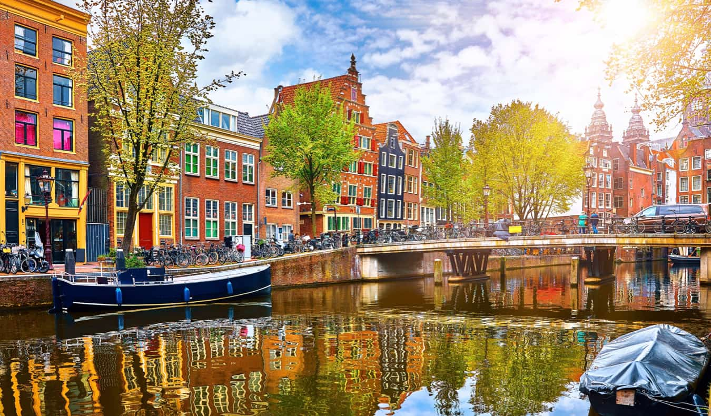
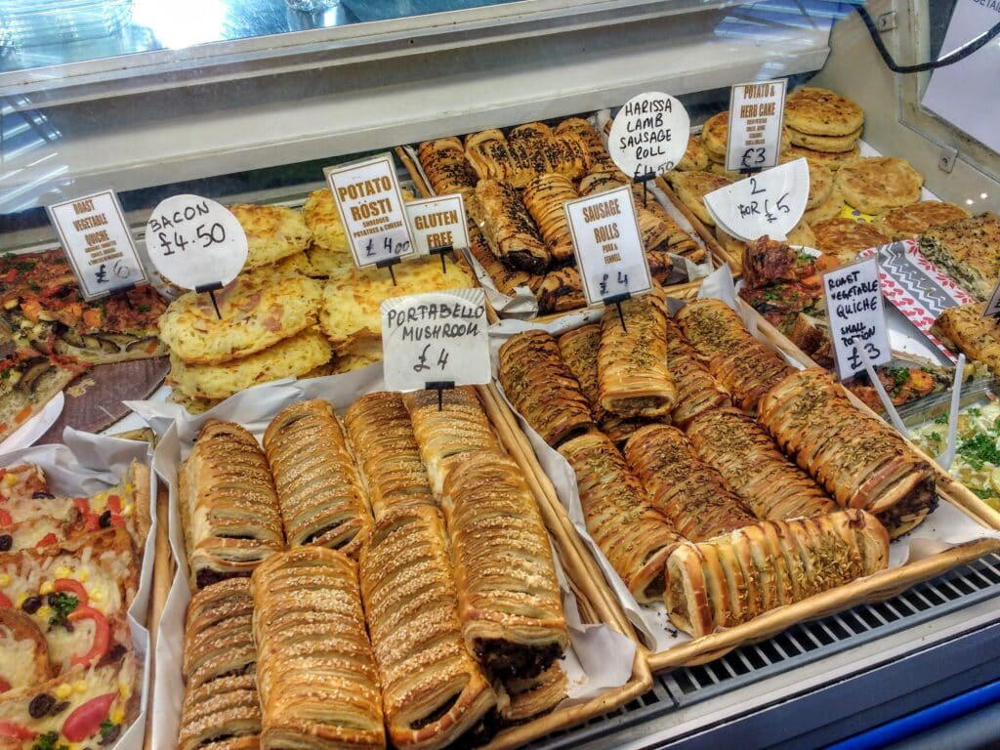

The Netherlands' famous Keukenhof Flower Gardens, which include an amazing collection of tulips and other
flora, are one of the reasons I am most interested in traveling there. This location offers an immersive
journey into the nation's horticultural heritage, providing a visually captivating and profoundly
enlightening experience with the diversity of nature. Moreover, the allure of Amsterdam extends beyond its
famed flower gardens and museums. The city's rich history, picturesque canals, and vibrant atmosphere beckon
exploration. A visit to the Van Gogh Museum promises a deep dive into the life and works of one of the most
influential artists in history.
Furthermore, Amsterdam's culinary scene presents an exciting opportunity to savor traditional Dutch
delicacies. Embracing these cultural and culinary experiences in the
Netherlands is sure to make for a memorable and enriching journey.
There are plenty of amazing places
to see,
from touring the quaint windmills and tulip fields of the countryside to exploring the architectural wonders
of cities. One can better understand the
Netherlands' rich history and current importance by immersing oneself in the country's colorful cultural
tapestry and embracing its progressive attitude.

Amsterdam

Netherlands CuisineVan Gogh Museum